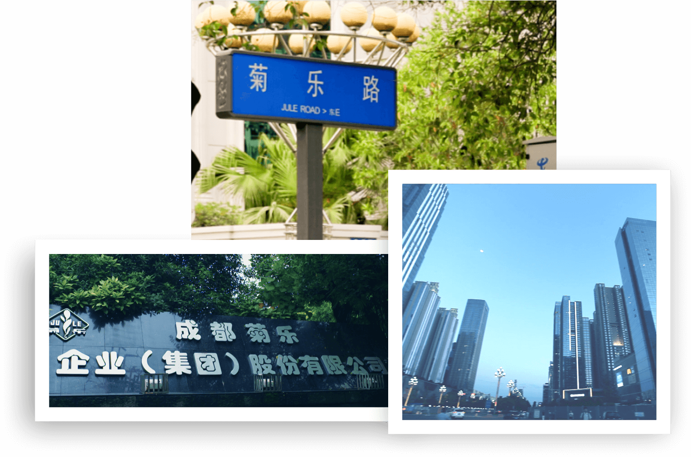
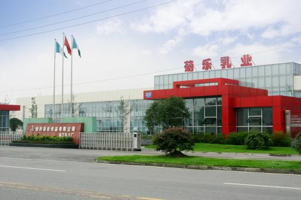

集团简介
Company Profile


菊乐企业最早可追溯至1966年设立的原成都化学制药厂。1985年，成都菊乐企业公司注册成立，当时下属三个实体：药厂、出租车公司和食品公司。1993年，成都菊乐企业(集团)股份有限公司设立，承继了成都菊乐企业公司的全部资产和业务，并获准向社会发行(定向募集)企业股票，是全国最早设立的股份有限公司之一。
1993年，西部第一家引进瑞典"利乐包"生产灌装线，主要用于生产菊乐牌系列饮料产品。1996年创新跨越，研制生产利乐包牛奶产品，成为中国最早使用利乐生产线的乳制品企业之一。
历经20多年稳健发展，菊乐食品已经是西南地区最大的乳制品生产及销售企业之一。"菊乐"品牌荣获成都市著名商标、四川省著名商标、四川名牌产品、中国驰名商标等荣誉。菊乐食品先后荣获成都市农业产业化重点龙头企业、四川省农业产业化重点龙头企业、国家级农业产业化重点龙头企业、四川省优秀民营企业（全省唯一乳企）等资质荣誉。
2016年是菊乐企业的50周年里程碑，踏上实现百年企业发展目标的新起点。经过持续创新和产业升级，集团产业已经涉及食品、制药、汽车服务、投资、电商、旅游等板块。
菊乐人秉承“诚信、创新、感恩”的企业文化，持续为消费者奉献健康产品，缔造健康生活方式。